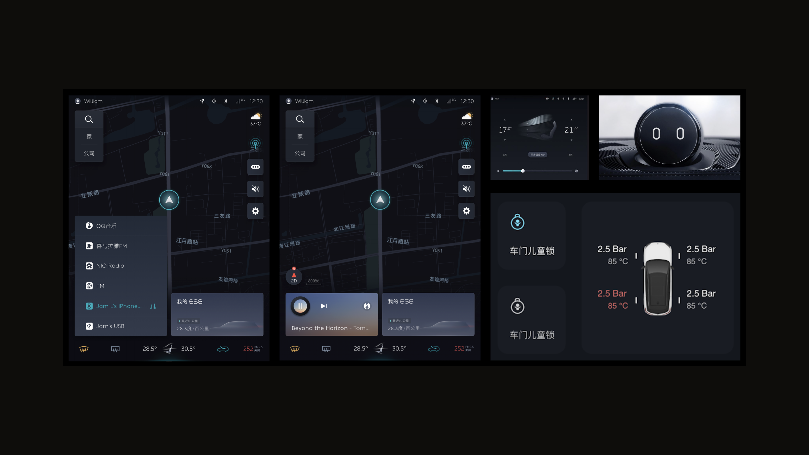
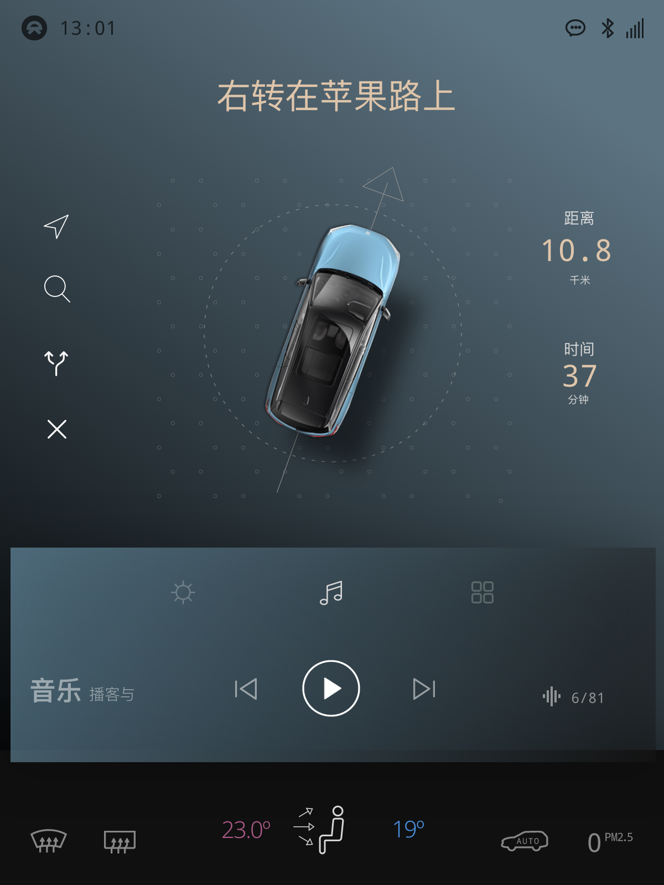

NIO ES8
0→1 design of the in-car HMI for NIO's first production vehicle, the ES8, later recognized with an iF Design Award and showcased at SXSW.

The problem
NIO was launching its first production car into a market that compared every screen to a smartphone. The HMI had to be fast to operate while driving, coherent across the centre display and instrument cluster, and distinctive enough to define a new brand.
The approach
Designed the HMI system from first principles: navigation as the anchor, media and vehicle controls one gesture away, and fast-control patterns that keep eyes on the road.
Built the 11.3-inch centre display experience that shipped in the ES8 and carried into the ES6 as NIO OS.
Authored the ES8 UX/UI design principles that guided the system, and an immersive digital experience showcased at SXSW.
Results

Leadership
Led UX for the ES8 HMI program from zero to production.